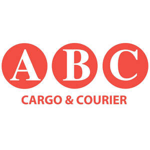
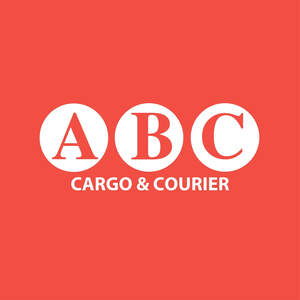

Trade Mark Journal No.2026/011 13 March 2026
UK00004346181 26 February 2026 (39)
Mark 1

Mark 2

- Class 39
- Transport; packaging and storage of goods; travel arrangement, namely the provision of international and domestic freight shipping services including the transportation, export, and import of goods, parcels, documents, and personal belongings by air, road, rail, and sea; freight forwarding; booking and arrangement of cargo shipments; expedited shipping services; transportation and delivery of excess baggage and commercial consignments; warehousing, storage, and safekeeping of goods, cargo, and personal effects; provision of secure collection, packing, and unpacking services; logistics management relating to the movement and distribution of freight; rental of storage units and containers; customs clearance and brokerage services in relation to the import and export of goods; preparation of shipping documents and customs declaration forms; tracking and tracing of shipments; transportation consultancy relating to rates, routings, and methods for international freight movement; arranging for the delivery and door-to-door forwarding of household items, commercial packages, and bulk shipments; information, advisory, and consultancy services in connection with all the aforesaid.
ABC Cargo & Courier UK Limited
Representative: Harper James Ltd